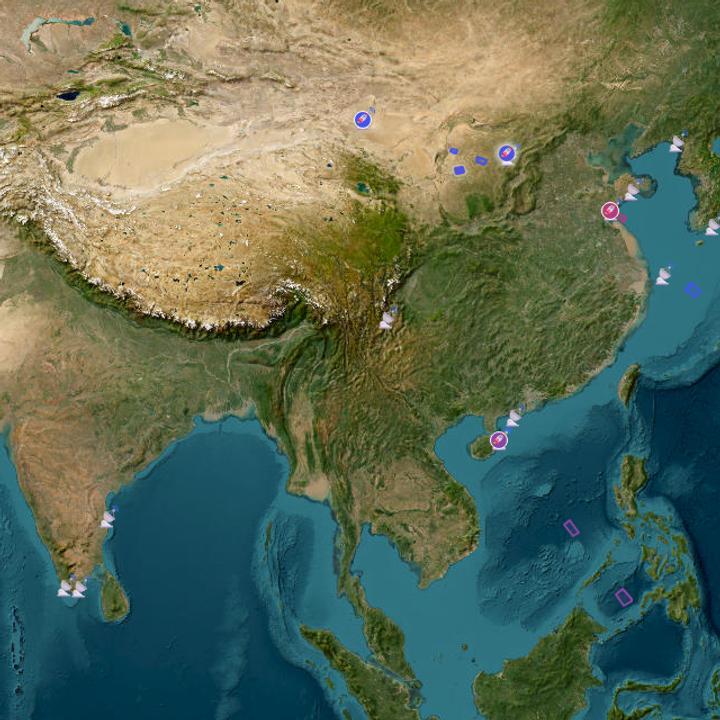

将火箭预报地图导入安卓 / iOS 桌面
选择适合设备的方式，把 NOTAM、MSI 和火箭预报地图放到手机桌面。
ANDROID · WidgetWhisper
安卓：WidgetWhisper
RocketWhisper 小组件直接从 GitHub Pages 获取服务器定时生成的中国区域地图图片，不再在手机上打开网页或本地截屏。服务器图片每两小时更新；小组件也每两小时请求最新图片，系统可能因省电策略延后刷新。
下载 WidgetWhisper 安卓安装包（APK）- 下载并安装 APK；如果系统询问，允许浏览器或文件管理器安装此来源的应用。
- 打开 WidgetWhisper，点顶部的 RocketWhisper 卡片。
- 选择方形 4×4、方形 2×2 或横向 4×2；RocketWhisper 目前提供中国区域地图。
- 点“添加到桌面”，在系统确认窗口中添加。也可以长按桌面空白处，从 WidgetWhisper 组件列表选择中国区域和对应尺寸。
- 点组件或应用中的“刷新”可立即请求服务器最新图片。建议在系统设置中将 WidgetWhisper 的电池用量设为“不受限制”；组件需要联网下载图片。
WidgetWhisper 安卓版尚未在实体安卓设备上测试。中国区域覆盖喀什、乌鲁木齐、南海及国内主要发射场。提供 4×4、2×2、4×2 三种桌面组件；地图会等比居中裁切以适配组件长宽比，并使用圆角矩形外框，不会拉伸变形。下载失败时会显示上次成功获取的缓存图片。

IOS · ScriptWidget
iOS：ScriptWidget
地图图片由服务端每 3 小时更新一次。请在小组件设置中把 Frequency 设为 3 Hours；iOS 负责实际刷新调度，可能稍有延迟。按准备添加的小组件尺寸下载对应组件包。
- 在 iPhone App Store 搜索并安装 ScriptWidget。
- 按想添加的组件大小，点击下方对应的“小号 / 中号 / 大号”下载链接。
- 下载完成后，在 Safari 的下载列表中点开 `.swt` 文件，选择“用 ScriptWidget 打开”或从分享菜单导入。
- 等待 ScriptWidget 完成导入并加载地图图片。
- 长按主屏幕空白处，点左上角“＋”，搜索 ScriptWidget，选择与刚才导入包相同的尺寸并添加小组件。
- 长按小组件，选择“编辑小组件”：选取对应的火箭地图，并将 Frequency 设为 3 Hours（3 小时）。实际时间仍由 iOS 调度，可能延后。
选择组件尺寸并下载
下载小号：169×169 pt（507×507 px，3×）
下载中号：360×169 pt（1080×507 px，3×）
下载大号：显示框 364×382 pt；图片 1092×1146 px（3×）
组件图片优先从 GitHub Pages 加载，无法连接时自动回退到 rocket.rainywhisper.com。中号图保持同一东西向范围，北缘裁至乌鲁木齐纬度。NASA GIBS Blue Marble（MODIS）作为底图。